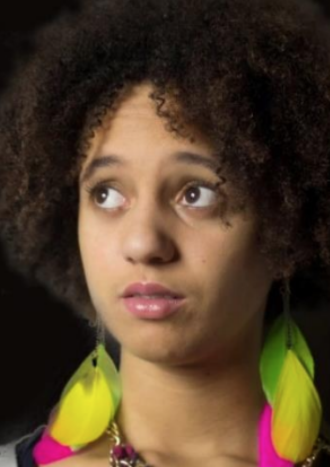

Emma Pujar
Emma débute le théâtre par l’improvisation théâtrale puis entre au Conservatoire municipal de Maurepas à 16 ans avant d’auditionner pour le Conservatoire de St-Germain-en-Laye. Parallèlement elle valide une licence d’arts du spectacle à l’université Paris Ouest la Défense. Initiée à l’écriture automatique par Alexandra Badea, elle crée deux pièces La tortue et la larve et Impressions Féminines.